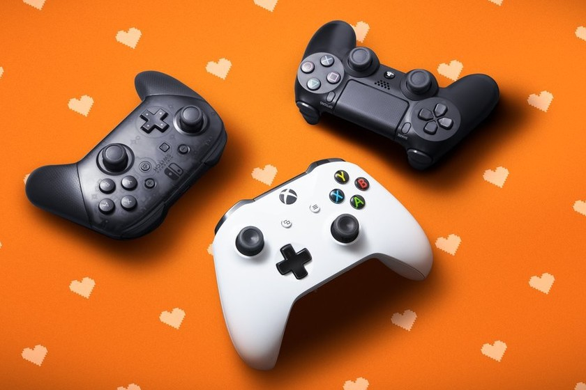
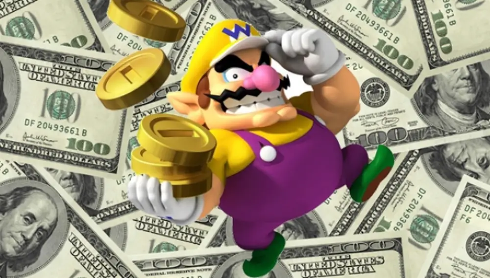
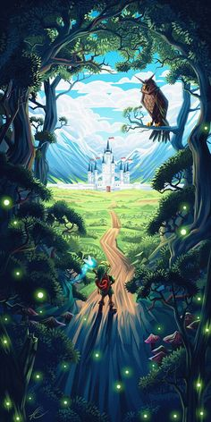
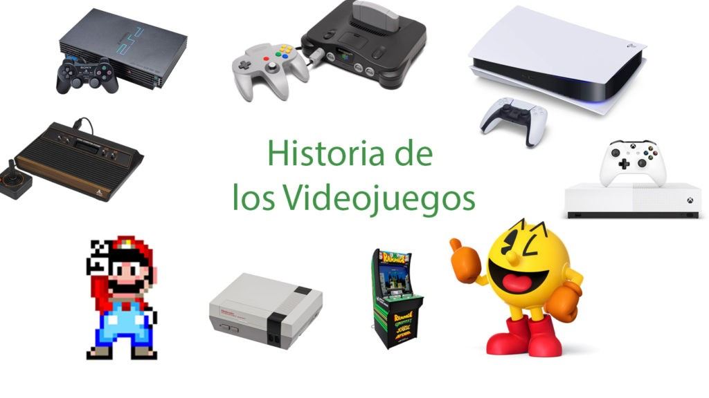
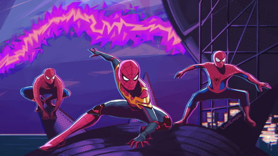

Se hablará de los videojuegos en general, de todos los tiempos y de todas las consolas, ya sea xbox, playstation o computadora,a celular, etc.
Desarrollo
Un videojuego es una aplicación interactiva orientada al entretenimiento que, a través de ciertos mandos o controles, permite simular experiencias en la pantalla de un televisor, una computadora u otro dispositivo electrónico.
Los videojuegos se diferencian de otras formas de entretenimiento, en que deben ser interactivos; es decir, los usuarios deben involucrarse activamente con el contenido.
Motivación
Escogí este tema porque siempre me han gustado los videojuegos. Dese pequeño me han gustado mucho y por eso quiero hacer este blog, para que ustedes también los conozcan.

Los videojuegos han cambiado bastante de los niños y su forma de aprender y vivir.
 Video Jueogs mas vendidos de la historia
08/09/2022
Minecraft 1
Grand Theft Auto V 2
Tetris (EA) 3
Wii Sports 4
PlayerUnknown’s Battlegrounds – PUGB 5
Super Mario Bros 6
Pokémon – Ediciones Roja, Azul y Amarilla 7
Mario Kart 8 / Deluxe 8
Wii Fit y Wii Fit Plus 9
Red Dead Redemption 2 10
Los video juegos son un mercado con mucho que abracar, eso genera que sean un medio que tiene mucho exito para vender, y este top es el mayor ejemplo de eso.
Los videojuegos son creados bajo diversas empresas que siempre están compitiendo por sacar los
mejores juegos. Las empresas más famosas son Nintendo, Xbox y Capcomusa, por lo que visitenlas
si les gusta el tema.
Algunas de las empresas más famosas y con más video-juegos.
 Video de Youtube
09/Junio/2022
Hecho por Cinamer el 23 de septiembre de 2020
Doom es un juego salvaje y muy explícito. Un festival de la destrucción en el que la carne y la
sangre sirven como fuegos artificiales, mostrándonos el lado más visceral y explícito de una
Bethesda que ha dominado la acción y la narrativa en primera persona a lo largo de esta
generación y que aprovecha para sacar músculo técnico, visual y artístico con escenarios y
modelos brutales. Regodeándose y siendo generosa, además, en guiños y detalles sutiles que son
puro fanservice.
Escogí este video porque habla de uno de los video juegos mas famosos de la actualidad.Además
habla del tema de "Mi computadora podrá correr este juego?". El video es bastante entretenido y
aunque el tema pudiera parecer un chiste lo abarca bastante bien y hasta con explicación formal
y todo.
Investigación
09/06/2022
En 1958 William Higginbotham creó, sirviéndose de un programa para el cálculo de trayectorias y un osciloscopio, Tennis for Two (tenis para dos): un simulador de tenis de mesa para entretenimiento de los visitantes de la exposición Brookhaven National Laboratory
La ascensión de los videojuegos llegó con la máquina recreativa Pong que es considerada la versión comercial del juego Tennis for Two de Higginbotham. El sistema fue diseñado por Al Alcom para Nolan Bushnell en la recién fundada Atari.
El juego se presentó en 1972 y fue la piedra angular del videojuego como industria. Durante los años siguientes se implantaron numerosos avances técnicos en los videojuegos (destacando los microprocesadores y los chips de memoria). Aparecieron en los salones recreativos juegos como Space Invaders (Taito) o Asteroids (Atari)
Los años 80 comenzaron con un fuerte crecimiento en el sector del videojuego alentado por la popularidad de los salones de máquinas recreativas y de las primeras videoconsolas aparecidas durante la década de los 70.
Durante estos años destacan sistemas como Oddyssey 2 (Phillips), Intellivision (Mattel), Colecovision (Coleco), Atari 5200, Commodore 64, Turbografx (NEC). Por otro lado en las máquinas recreativas triunfaron juegos como el famoso Pacman (Namco), Battle Zone (Atari), Pole Position (Namco), Tron (Midway) o Zaxxon (Sega).
En 1985 apareció Super Mario Bros, que supuso un punto de inflexión en el desarrollo de los juegos electrónicos, ya que la mayoría de los juegos anteriores sólo contenían unas pocas pantallas que se repetían en un bucle y el objetivo simplemente era hacer una alta puntuación. El juego desarrollado por Nintendo supuso un estallido de creatividad. Por primera vez teníamos un objetivo y un final en un videojuego. En los años posteriores otras compañías emularon su estilo de j
A principios de los años 90 las videoconsolas dieron un importante salto técnico gracias a la competición de la llamada "generación de 16 bits" compuesta por la Mega Drive, la Super Nintendo Entertainmet de Nintendo, la PC Engine de NEC, conocida como Turbografx en occidente y la CPS Changer de (Capcom).
Junto a ellas también apareció la Neo Geo (SNK) una consola que igualaba las prestaciones técnicas de un arcade pero demasiado cara para llegar de forma masiva a los hogares.
Esta generación supuso un importante aumento en la cantidad de jugadores y la introducción de tecnologías como el CD-ROM, una importante evolución dentro de los diferentes géneros de videojuegos, principalmente gracias a las nuevas capacidades técnicas.
Mientras tanto diversas compañías habían comenzado a trabajar en videojuegos con entornos tridimensionales, principalmente en el campo de los PC, obteniendo diferentes resultados desde las “2D y media” de Doom, 3D completas de 4D Boxing a las 3D sobre entornos pre-renderizados de Alone in Dark. Referente a las ya antiguas consolas de 16 bits, su mayor y último logro se produciría por el SNES mediante la tecnología 3-D de pre-renderizados de SGI, siendo su máxima expresión juegos como Donkey Kong Country y Killer Instinct. También surgió el primero juego poligonal en consola, la competencia de la SNES, Mega-Drive, lanzó el Virtual Racing, que tuvo un gran éxito ya que marcó un antes y un después en los juegos 3D en consola.
Rápidamente los videojuegos en 3D fueron ocupando un importante lugar en el mercado, principalmente gracias a la llamada "generación de 32 bits" en las videoconsolas: Sony PlayStation y Sega Saturn (principalmente en Japón); y la “generación de 64 bits” en las videoconsolas: Nintendo 64 y Atari jaguar. En cuanto a los ordenadores, se crearon las aceleradoras 3D.
La consola de Sony apareció tras un proyecto iniciado con Nintendo (denominado SNES PlayStation), que consistía en un periférico para SNES con lector de CD. Al final Nintendo rechazó la propuesta de Sony, puesto que Sega había desarrollado algo parecido sin tener éxito, y Sony lanzó independientemente PlayStation.
Por su parte los arcades comenzaron un lento pero imparable declive según aumentaba el acceso a consolas y ordenadores más potentes.
Por su parte los videojuegos portátiles, producto de las nuevas tecnologías más poderosas, comenzaron su verdadero auge, uniéndose a la Game Boy máquinas como la Game Gear (Sega), Linx (Atari) o la Neo Geo Pocket (SNK), aunque ninguna pudo hacerle frente a la popularidad de la Game Boy, siendo esta y sus descendientes (Game Boy Pocket, Game Boy Color, Game Boy Advance, Game Boy Advance SP) las dominadoras del mercado.
Hacia finales de la década la consola más popular era la PlayStation con juegos como Final Fantasy VII (Square), Resident Evil (Capcom), Winning Eleven 4 (Konami), Gran Turismo (Polyphony Digital) y Metal Gear Solid (konami).
En PC eran muy populares los FPS (juegos de acción en primera persona) como Quake (id Softare), Unreal (Epic Megagames) o Half-Life (Valve), y los RTS (juegos de estrategia en tiempo real) como Command & Conquer (Westwood) o Starcraft (Blizzard). Además, conexiones entre ordenadores mediante internet facilitaron el juego multijugador, convirtiéndolo en la opción predilecta de muchos jugadores, y fueron las responsables del nacimiento de los MMORPG (juegos de rol multijugador online) como Ultima Online (Origin). Finalmente en 1998 apareció en Japón la Dreamcast (Sega) y daría comienzo a la “generación de los 128 bits”.
En el 2000 Sony lanzó la anticipada PlayStation 2 y Sega lanzó otra consola con las mismas características técnicas de la Dreamcast, nada más que venia con un monitor de 14 pulgadas, un teclado, altavoces y los mismos mandos llamados Dreamcast Drivers 2000 Series CX-1.
Nintendo lanzó el sucesor de la Nintendo 64, la Gamecube, y la primera Game Boy completamente nueva desde la creación de la compañía, la Game Boy Advance. Sega viendo que no podría competir, especialmente con una nueva máquina como la de Sony, anunció que ya no produciría hardware, convirtiéndose sólo en desarrolladora de software en 2002.
El ordenador personal PC es la plataforma más cara de juegos pero también la que permite mayor flexibilidad. Esta flexibilidad proviene del hecho de poder añadir al ordenador componentes que se pueden mejorar constantemente, como son tarjetas gráficas o de sonido y accesorios como volantes, pedales y mandos, etc. Además es posible actualizar los juegos con parches oficiales o con nuevos añadidos realizados por la compañía que creó el juego o por otros usuarios.
<<<<<<< HEAD
video juegos
=======
Texto de descripción de mi ilustración.
>>>>>>> ad335e334cf826f6fc89634bda93772cef4185b5
 Mi Video de Youtube
10/Junio/2022
Hecho por Ismael Castro Monroy el 10 de Junio del 2022
 Meme de los videojuegos
10/Junio/2022
Hecho por Ismael Castro Monroy el 10 de Junio del 2022
 Introducción a mi tema
Introducción a mi tema
 Sitios oficiales
Sitios oficiales
 Investigación
Investigación